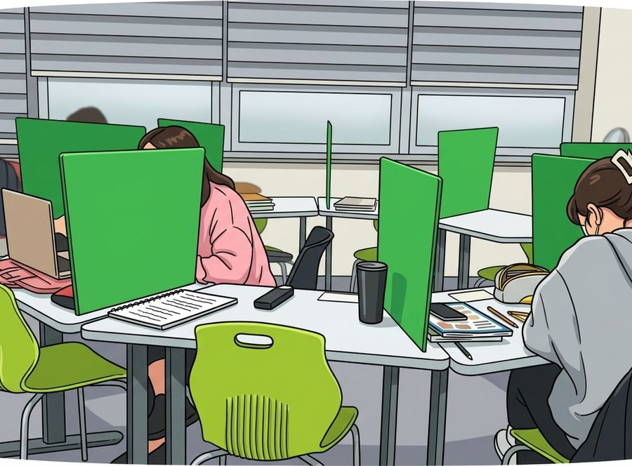

선생님은 옆에서 봐 줍니다.
지점 안내
| 주소 | 경기 화성시 병점중앙로 87 408호 와와학습코칭학원 병점고 맞은편 봉구스 밥버거 건물 4층 (엘리베이터 내리셔서 오른쪽 끝 -> 왼쪽 끝 위치) |
|---|---|
| 주변 | 병점고등학교 인근 |
| 수업 과목 | 국어초2~중2영어초1~고3수학초1~중3 |
| 수업 시간 | 평일 오후 1시 이후 · 주말불가 상담은 미리 예약 · 셔틀버스 운영 안 함 · 금액은 아래 수강료 표 참고 |
오시는 길
어떻게 수업하나요
한 교실에 앉아 있어도 학생마다 푸는 교재와 단원이 다릅니다. 처음 등록할 때 진단을 하고, 그 결과에 맞춰 시작 단원과 주당 횟수를 정하기 때문입니다. 국어, 영어, 수학 각 과목은 그 과목 선생님이 맡습니다.
수업 시간에는 강의를 듣는 대신 직접 풉니다. 선생님은 학생 사이를 다니며 풀이를 보고, 막힌 곳을 그 자리에서 설명합니다. 공부 방법과 습관을 잡는 것도 이 시간에 같이 합니다.
- 시험 3~4주 전부터는 다니는 학교의 시험 범위와 자료로 내신을 준비합니다.
- 학기 중 언제든 시작할 수 있고, 시작 시점의 진단 결과가 곧 커리큘럼이 됩니다.
- 과목·학년·시간대는 지점별로 차이가 있어 상담에서 확인하는 것이 정확합니다.
초초등부
초등은 잘 가르치는 것보다 매일 앉아서 정해진 양을 끝내는 습관이 먼저입니다. 학교 진도에 맞춰 수업하면서 연산과 어휘를 학기마다 점검하고, 그날 분량을 스스로 마치는 연습을 반복합니다. 중학교 올라가기 전 해에는 중등 과정과 이어지는 단원을 미리 다룹니다.
중중등부
중등 과정의 목표는 두 가지입니다. 당장의 학교 내신, 그리고 고등 과정을 버틸 기초입니다. 내신 기간에는 학교별 기출 중심으로, 평소에는 고등 연계 단원 위주로 수업 비중을 조절합니다. 공부 계획을 스스로 세우고 지키는 습관은 이 시기에 잡아야 해서, 매 수업 계획 확인이 같이 들어갑니다.
고고등부
고등 내신은 범위가 넓어 시험 직전에 몰아서 준비하기 어렵습니다. 평소 진도를 주 단위로 점검해 두고, 시험 4주 전부터 학교 기출 유형으로 실전 대비를 합니다. 수행평가와 교과 세특 주제도 수업에서 다룬 내용과 연결해 챙기고, 내신과 모의고사 비중은 상담에서 같이 정합니다.
과목별 수업 안내
아래 과목을 누르면 화성태안점의 과목별 수업 순서와 내신 준비 방법을 확인할 수 있습니다.
관리 학교
현재 화성태안점에 다니는 학생들의 학교 목록입니다. 학교별 시험 준비 방법은 이름을 눌러 보세요. 여기 없는 학교 학생도 상담 후 수업이 가능합니다.
영상으로 보는 와와

자주 묻는 질문
강의식 수업인가요?
아닙니다. 선생님이 앞에서 설명하고 학생이 받아 적는 방식이 아니라, 학생이 직접 풀고 선생님이 개별로 봐 주는 방식입니다. 공부 습관을 잡는 것까지 수업에 포함됩니다.
상담은 어떻게 신청하나요?
전화 상담 버튼을 누르시거나 상담 신청 페이지에 학생 정보를 남겨 주세요. 접수되면 지점에서 연락드려 상담 시간을 정합니다.
수업료는 어떻게 되나요?
학년과 주당 횟수에 따라 다릅니다. 화성태안점 기준 금액은 수강료 안내 표에 있고, 자세한 시간과 횟수는 상담에서 조율합니다.